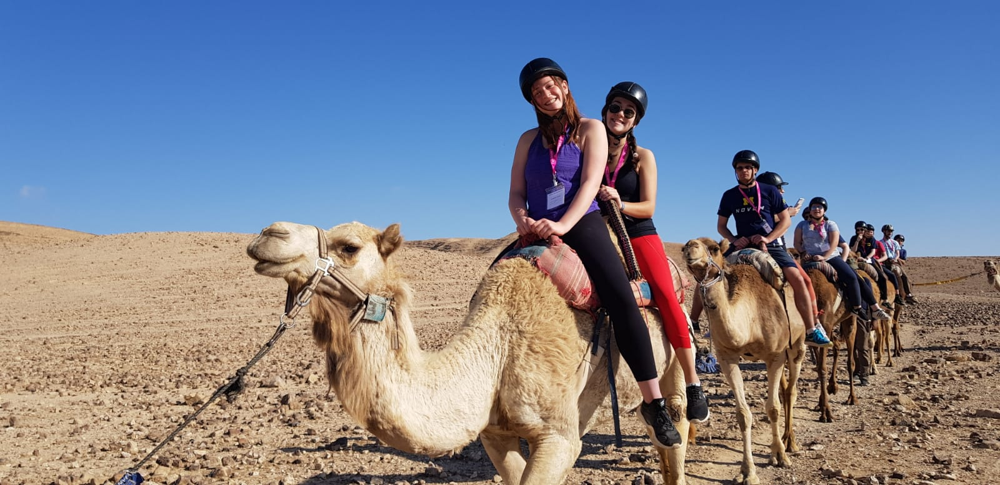
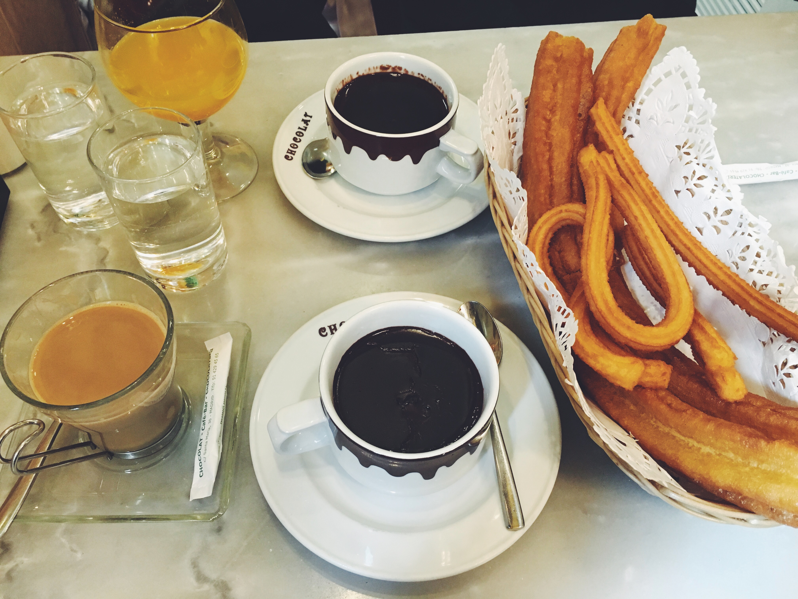
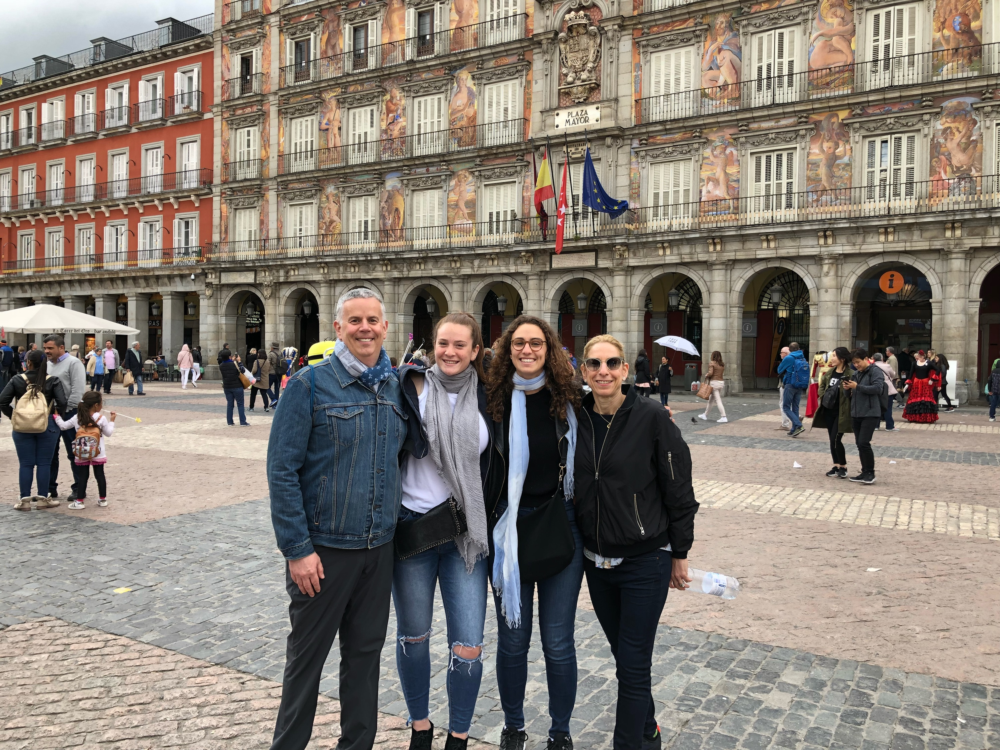
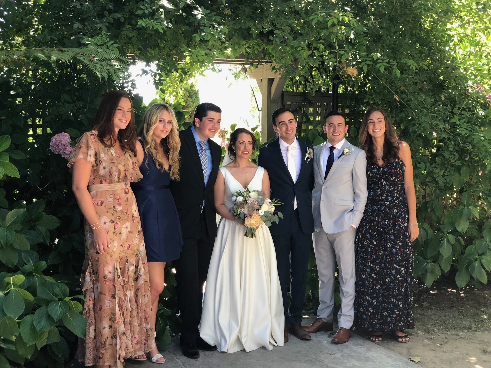
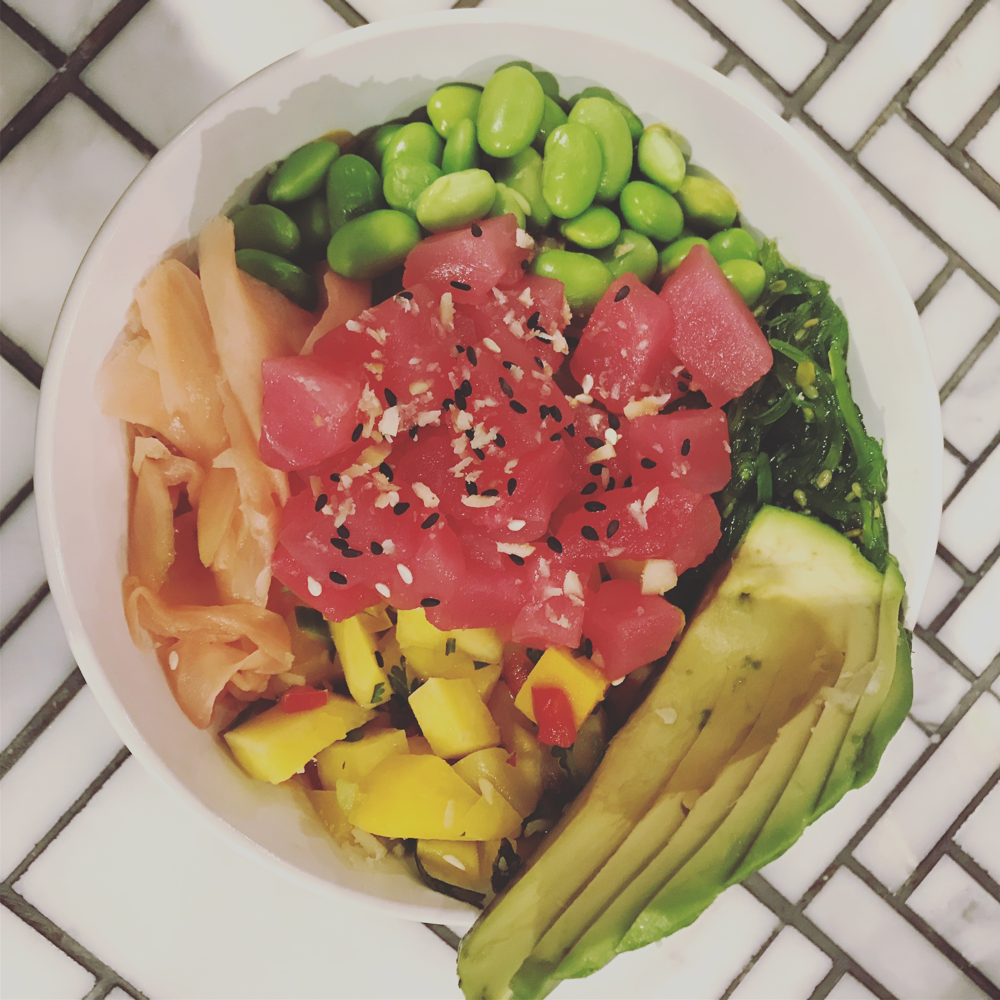
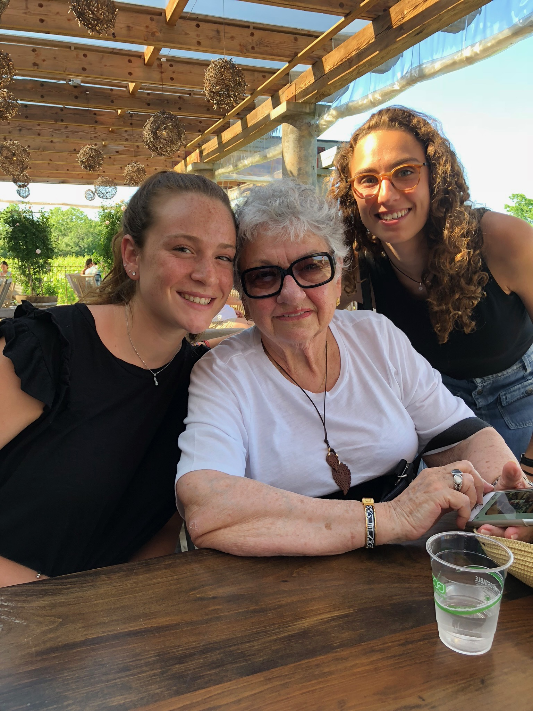
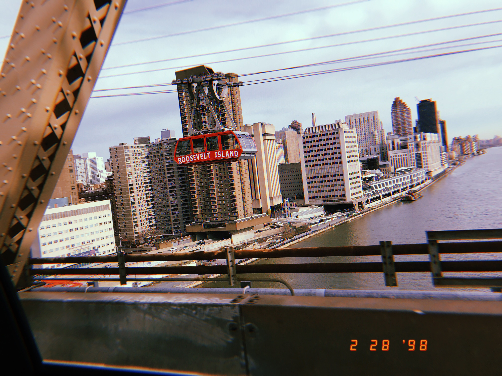
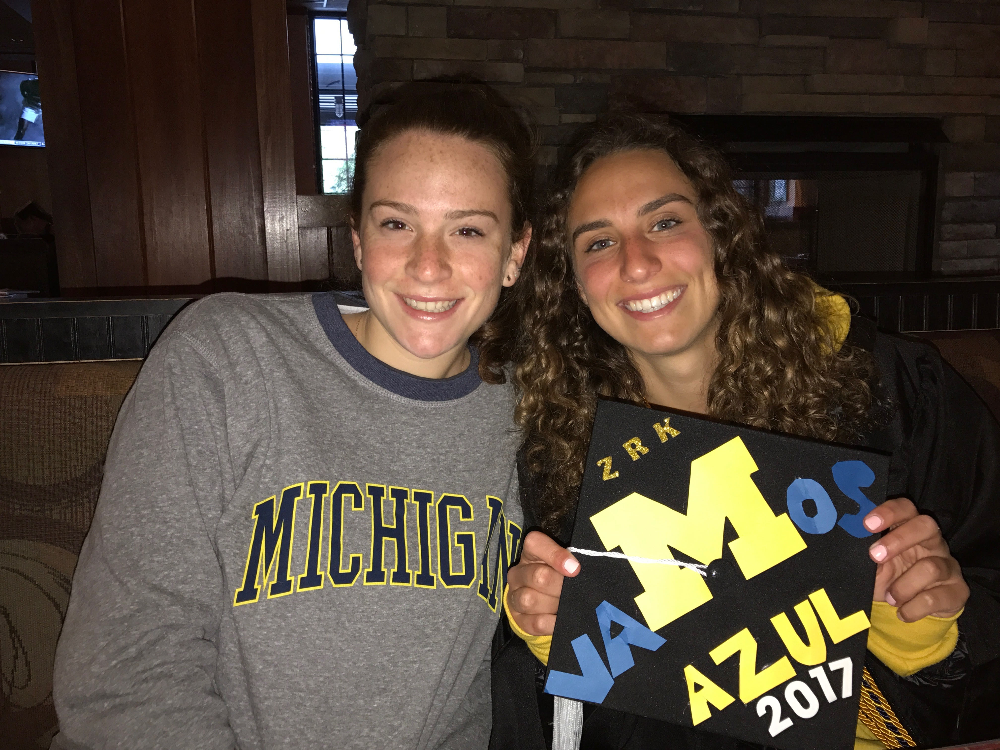

GALLERY
THINGS I LOVE

Here, I am a riding a camel in the Negev Desert in Israel

The churros I ate in Madrid with my family

My family and I in a major plaza in Madrid visiting my older sister who lives there.

My cousins and I at their wedding in California.

My favorite meal at Michigan from Wilmas

My grandma with me and my sister in the Hamptons.
When I finally got to see Hamilton.

I took this photo on my way to New York City.

My older sister and I when she was graduating from Michigan.